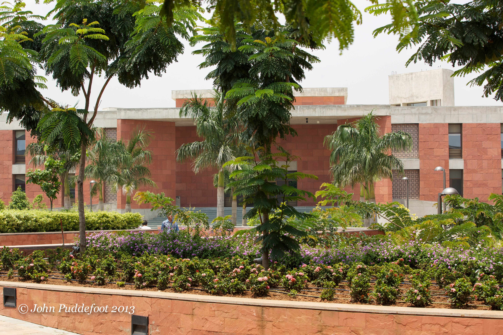

India
The Aga Khan Academy, Hyderabad
Founding Head of School, 2011–2014. Building one of India's leading international schools from the ground up.

The Junior School opened in August 2011 offering the IB PYP programme. The Senior School opened in August 2012 offering the MYP and IB Diploma.
A mixture of day and residential provision, AKAH quickly established itself as one of the leading schools in India.
John became the Founding Head in August 2011 and took the academy through IB PYP and DP authorisation. He led the project from site selection and architectural planning through to opening, staffing, curriculum development, and IB World School authorisation.
The academy serves students from nursery through IB Diploma, combining academic excellence with the Aga Khan Development Network's commitment to pluralism and service.